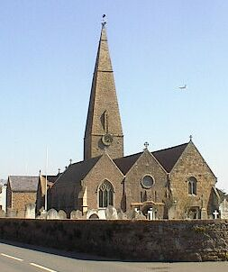

Duthant les longues années que j'ai 'té à l'empliai des Chroniques j'ai ieu des tâches à remplyi et des djobes à entreprendre qui n'avaient rain à faithe avec le journalisme. Et dans bain des temps che n'tait pas bain agréablye. Si ch'est qu'i' y avait du sale travas à faithe nou r'tchiyait tréjous sus l'Caouain.
Je n'ai jamais trop murmuthé, car ou savez bain quand nous a sa vie à gâgni nou n'peut pon être trop indépendent. I' faut bain obéi à ses supérieurs, ou ch'est-à-dithe ès siens que l'hasard a plaichi au d'sus d'nous. Mais dame! quand nous est ordonnés d'entreprendre des aventuthes qui n'ont autchun objet pratique et qui n'peuvent pon mener à un rêsultat d'autchune utilité publique, et que nou n'peut pas accomplyi sans mettre sa vie en dangi, mé j'dis que les siens qui vos c'mandent de faithe ditèt dev'thaient avé siex mais d'prison avec travaux forchis.
Ous êtes à vosd'mander tch'est que l'Caouain veurt dithe par tout chenna et ouest que tout chennechin nouos mène.
Eh bain je m'en vais vos l'dithe.
Le Chef oui l'aut'e jour qu'un homme du nom de Larkin était v'nu d'Angeterre tout exprès pour examiner touos les cliochiers de nos églyses qu'étaient supposés d'aver 'té êlouaîssis par le trembliement d'terre que j'eûmes ichin i' y a tchique temps, et que chet homme-là avait fixé des êtchelles pour grapiner jusqu'au haut.
Tchique imbécile vint li dithe au bureau que Djonnie le Surveillant dans la pâraisse du bouan berger avait monté sus l'haut du cliochi et qu'une jeune fille bain connue dans la pâraisse en avait fait autant.
L'idée li vint qu'un articlye sus l'ile de Jêrri comme ou pathait de ches hauteurs-là, pourrait être intérêssant pour nos lecteurs ch'est pourtchi i' m'dit comme chenna “Caouain! je veurs que tu prennes des m'suthes pour monter au haut de touos les cliochiers et nos êcrithes une série d'articlyes sus les impressions que tu formethas là-haut.”
Ch'est bain aimablye de votre part, je li raîponni, “mais criyous pon que si tout chenna venait de votre pliume, i' s'sait bain pus apprécié pas nos lecteurs, et je s'rais d'avis qu'ous y monthéthiez, vous!”
“Chenna est impossiblye!” qu'i' m'dit, “Tu sais bain que je sommes justement en train de r'muer et i'faut que je sais sus les lieux!”
Ch'est là tréjous l'extchuse qui donne acheteu, quant i'y a tchiquechose à faithe qui n'est pas justement de san goût.
“Ch'est ta djobe à té, à mains sans doute que tu aies trop peux! Je crais réellement que tu n'est pas gamme!”
Quand nous attaque de même le couothage du Caouain, ch'est autant d'fini.
“Pas gamme?” je li dis, “eh bain j'verrons!”
Et don je m'en fut sus l'Weighbridge et je monte dans une bus qui passait à travers de la paraîsse du bouan berger.
Quand je d'valli auprès d'la poste et que je r'gardi l'cliochi et que j'vis chute petite êtchelle-là qui condisait jusqu'au haut, je m'senti failli et j'pensi que jamais je n'pouorais entreprendre une patheille aventuthe.
Mais i' fallait bain ou jamais je n'en aithais oui la dernié pothole.
Prenant man couothage à mes des mains j'entri dans l'chimetchaithe.
Au pid du cliochi je trouvi un homme qu'était à démêler du chiment.
“V'là du biau temps,” j'li dis.
“I beg your pardon?”
Je vis bain que ch'tait un angliais et que ch'airait 'té une perte d'temps que d'entrer en conversation avec li, ch'est pourtchi je m'en fu au pid de l'êtchelle et je mins man pid sus la premié broque.
“Hi!” qu'i' m'criyi, “what's the game”
Je déshalli ma carte et je li dis “Press.”
Mais chenna n'eut autchun êffet avec li!
Au contraithe i m'happi par une ouotheille et m'dit “I'll “press” you to clear out!”
Je n'protesti pas par exemplye! car ch'tait un ouaisé qui n'pathaissait pas trop c'monde.
Ch'est pourtchi je m'en fus bain trantchillement et je fus trouver Jack Hamon le gardgien du chimetchaithe et en l'pompant un mio je dêcouvri que ch't Anglais là tchittait san travas à une heuthe et s'en allait dîner à l'hôtel.
Je rôdi dans l'vaisinné en attendant qu'i' fusse hors et dès qu'la côte fut claithe je m'décidi de grapiner amont chette êtchelle-là.
Ch'tait bain aisi à c'menchi et je ramonti jusqu'à l'enlouage et je pensi “me v'là bétôt à mié c'min!”
Mais quand j'eu ramonté oquo à près près trente pids, je m'arrêti pour erprendre m'n haleine et j'eus l'malheur de r'garder en bas.
La tête c'menchi à m'touâner et mes gambes trembliaient souos mé.
Quand j'êprouvi à r'garder en haut je vis les barrèques de St. Pierre qui filaient sept noeuds du côté de St. Ou et la Corbiéthe qu is'en allait dansant dans la direction de Dgernesi!
“Ah,” j'pensi m'n heuthe est v'nue, le Caouain est fini chute feis!”
Ous avez oui que quand un homme se nyie tout san pâssé passe comme un panorama devantli.
Eh bain ch'en fus d'même avec mé.
V'la tchi c'menchi dans la carrièthe ouest que j'fus né, les jours de ma jeunesse, man mathiage avec Marie Hibou, et ma conscienche me dit que n'l'avait p't-être pas tréjous traitée comme j'aithais deu.
Je pensis au Chef et je vis san riton satanique quant i'ouithait la nouvelle que j'avais té trébutchi.
Je réalisi que jamais je n'aithais l'expérience d'un séjour dans nos nouvelles prémisses, et pis je perdi connaissance.
Quand je r'prins mes sens j'étais dans l'Committee Room du Parish Hall sus un matelas.
I'y avait une foule de monde alentou d'mé, le Connaitablye, le Recteur Artu Le Marquand le nouviau Chant'gnyi, et un tas d'autres que je n'connaissait pas.
Je r'oui opprès que même Albert Le Bro' 'tait dans l'allée près à prendre ma m'suthe et que Françouais Gallais était hors à cherchi sa bêque pour m'enfoui.
Quand y virent que j'n'tais pas mort tchiqu'uns d'ieux voulithent c'menchi à faithe du traîn mais l'Recteur lus dis que l'moment n'était pas opportun, que y valait bain mus m'envier à l'Hopita que de s'mettre à m'faithe des r'proches.
Je li s'sait tréjous erconnaissait de m'avé d'même protégi contre touos ches autre-là, qu'avaient la mine comme si voulaient m'avaler.
Eh bain avec le temps l'ambulance vint m'cherchi et je fus mins à l'Hopita ouest que je crai que je m'en vais passer man Nouë.
Je n'avais rain d'rompu, car i' pathait que d'vant perdre connaissance j'avais passé iun d'mes ergots entre deux broques et j'étais resté suspendu jusqu'à que j'fusse trouvé par le “steeplejack” quand i' r'vint de san dîner.
Mais pas d'autre grimpethie d'cliochier pour mé!
Caouain
Les Chroniques de Jersey 18/12/1926
Viyiz étout: